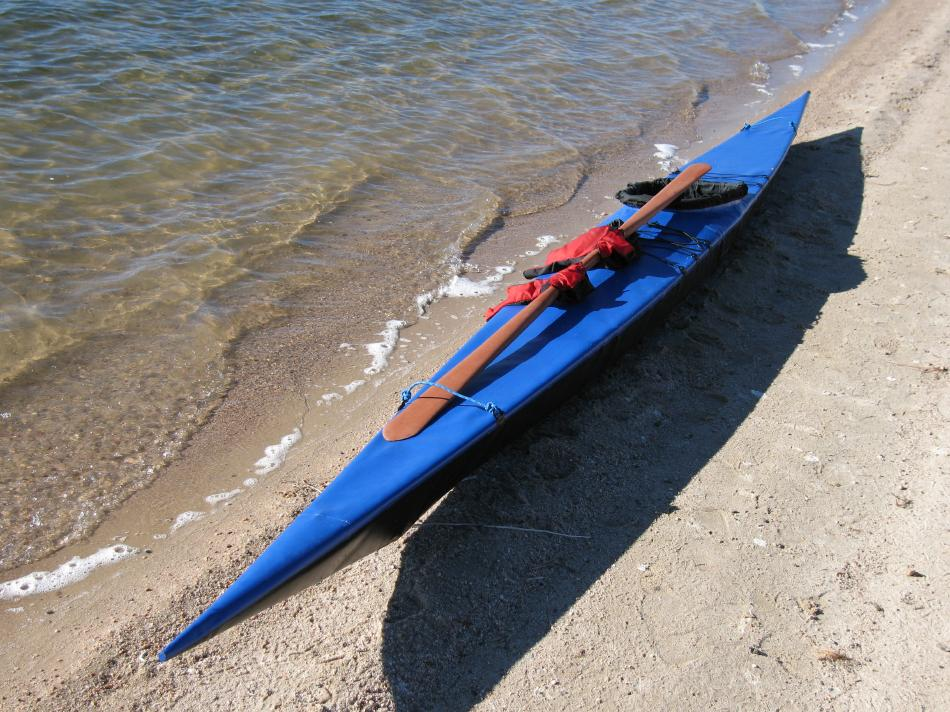

| Sea Glider | Menu Previous Page Next Page |
|
 The Sea Glider (19.2ft X 18in) / (584cm X 45.7cm) is the longest and narrowest folder in the manual. Based on the Sea Rider , it has good tracking and turning, and is more stable than it's narrow beam would indicate. Fore and aft deck zippers are still to be added. The Sea Glider Offsets are at the end of this section. Use the (BACK) key to return. |
|